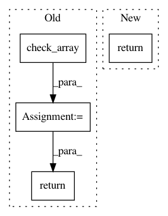

7f77e78520f498a1c86412cc67f40d5abd6ee21d,tpot/builtins/feature_transformers.py,CategoricalSelector,transform,#CategoricalSelector#Any#,94
Before Change
The transformed feature set.
X = check_array(X)
X_transformed = np.copy(X)
categorical_features = auto_select_categorical_features(X, threshold=self.threshold)
return X_transformed
After Change
X_sel = X[:, ind[sel]]
ohe = OneHotEncoder(categorical_features="all", sparse=False, minimum_fraction=self.minimum_fraction)
return ohe.fit_transform(X_sel)
In pattern: SUPERPATTERN
Frequency: 4
Non-data size: 4
Instances
Project Name: EpistasisLab/tpot
Commit Name: 7f77e78520f498a1c86412cc67f40d5abd6ee21d
Time: 2017-09-06
Author: weixuanf@upenn.edu
File Name: tpot/builtins/feature_transformers.py
Class Name: CategoricalSelector
Method Name: transform
Project Name: metric-learn/metric-learn
Commit Name: 23d07466961fa7a72aa8692bc42d6d569b80c5c9
Time: 2019-01-02
Author: 31916524+wdevazelhes@users.noreply.github.com
File Name: metric_learn/sdml.py
Class Name: SDML_Supervised
Method Name: fit
Project Name: yzhao062/pyod
Commit Name: ac32c317eb8178e4f94ad0b2ec2e0450a57e729f
Time: 2019-12-21
Author: zhaoy@cmu.edu
File Name: pyod/models/combination.py
Class Name:
Method Name: average
Project Name: yzhao062/pyod
Commit Name: ac32c317eb8178e4f94ad0b2ec2e0450a57e729f
Time: 2019-12-21
Author: zhaoy@cmu.edu
File Name: pyod/models/combination.py
Class Name:
Method Name: maximization